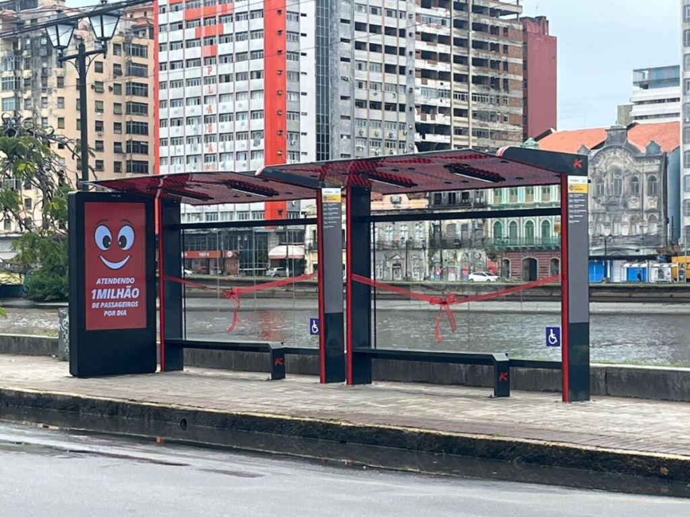

Fetiche da Tecnologia 2
Exemplos:
-
Inteligência Artificial
- Dia sim e dia também no canal
- "A AGI vai revolucionar o avanço da ciência"
- Os modelos, por serem 'caixas pretas' são os que mais incorporam o misticismo por trás do conceito
-
Criptomoedas, NFT, Metaverso, etc...

-
Criptoanarquia / Cypherpunks
- Hal Finney, mesmo sendo um ancap fez a crítica: "Eu não estou no Cíberespaço agora, eu estou na California"
- "Confie na matemática, não nas pessoas"
-
"A Inovação Tecnológica meo"
- O Datacenter de Eldorado do Sul
-
Investimento em 'inteligência' para segurança
- Tecnologia para educação
- 1 laptop per child
- Acesso a computadores, tablets e internet nas escolas
- https://educador.brasilescola.uol.com.br/noticias/escolas-publicas-do-rs-adotam-chromebooks-como-ferramenta-de-aprendizagem.htm
- Paradas de ônibus gamer

- O mercado de TI que aparentemente é descolado dos outros (vagas infinitas, salários altíssimos, etc...)
- Só queremos participar da nossa comunidade de gamers/desenvolvedores sem nos envolver com política
Notem que na maioria dos exemplos existe um foco na tecnologia, uma inversão de causa e consequência, e uma remoção do que deveria ser o nosso foco.
Ao invisibilizar o que é necessário para construir a tecnologia e como ela interage com nosso dia a dia nos integramos 'sem alternativa' às dinamicas do extrativismo digital dos centros econômicos ou o 'colonialismo digital'.
"... os territórios nacionais se transformam num espaço nacional da economia internacional e os sistemas de engenharia mais modernos, criados em cada país, são mais bem utilizados por firmas transnacionais que pela própria sociedade nacional." - Milton Santos, A natureza do espaço: técnica e tempo, razão e emoção (São Paulo, Edusp, 2002).
https://outraspalavras.net/outrosquinhentos/para-hackear-o-colonialismo-e-o-racismo-digital/
Por exemplo dizer "essa ferramenta é neutra, depende do uso que fazemos" pode também nos levar a um erro já que tecnologias são criadas num contexto social e para um propósito específico. Ex.: agrotóxico
Se a tecnologia está removida da sociedade, pairando por cima das relações sociais, é possível investir em tecnologias de maneira "neutra" e "técnica". O erro, ou a mentira, no cerne desse pensamento é provavelmente o tema principal do canal Tecnologia e Classe